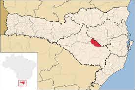
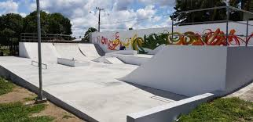

1 / 10

Bandeira de Otacílio Costa
2 / 10

localização
3 / 10
Centro Administrativo de Otacílio Costa
4 / 10
Portal de Otacílio Costa
5 / 10
Avenida Olinkraft
6 / 10
Geada em Otacílio Costa
7 / 10
Praça de Otacílio Costa
8 / 10

Pista de skate de Otacílio Costa
9 / 10
Rodoviária de Otacílio Costa
1 / 10
Pôr do sol